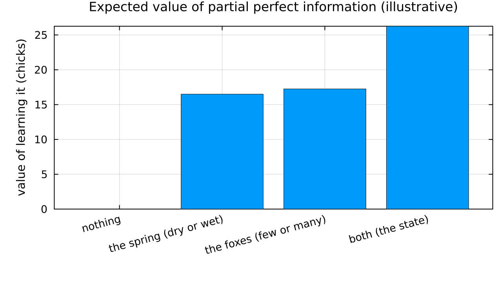

Partial information: which uncertainty matters
Simon Frost
- Motivation
- The problem
- Partitions
- Reading the result
- A partition need not be a component
- EVPPI is the EVSI of a test that reveals the cell
- What to take away
- Next
Motivation
The state of the world usually has several components, and research can resolve one of them without touching the others. The expected value of partial perfect information (EVPPI) is the value of learning one component exactly. It ranks uncertainties by what resolving them would do for the decision, which is not the same as ranking them by how uncertain they are.
In DecisionAnalysis.jl, what is learned is described by a partition of the states: the manager is told which cell of the partition the state lies in, and nothing more.
The problem
Lapwings breed on a wet grassland reserve. Two things are uncertain about the coming season: whether foxes will be few or many, and whether the spring will be dry or wet. The manager can leave the site as it is, put up a predator fence around the main breeding field, or raise the water level with a sluice. The outcome is the number of chicks fledged.
All numbers are illustrative, not data and not estimates for any real reserve.
The state is a pair (foxes, spring), so there are four states. The belief over the pairs is built from a joint distribution with FiniteKernels.jl, the package that supplies finite state spaces; a FiniteBelief accepts such a state directly and labels the joint states by joining the component labels.
using DecisionAnalysis
using FiniteKernels: FiniteSpace, tensor_space, state
include(joinpath("..", "_common.jl"))
foxes = FiniteSpace(:foxes, [:few_foxes, :many_foxes])
spring = FiniteSpace(:spring, [:dry, :wet])
joint = state(tensor_space(foxes, spring),
[3//10 3//10 # few foxes: dry, wet
1//4 3//20]) # many foxes: dry, wet
belief = FiniteBelief(joint)
md_table(["state", "probability"],
[[s, exact(p)] for (s, p) in zip(state_labels(belief), probabilities(belief))])| state | probability |
|---|---|
few_foxes_dry | 3/10 |
many_foxes_dry | 1/4 |
few_foxes_wet | 3/10 |
many_foxes_wet | 3/20 |
Foxes and rainfall are not independent in this belief: a dry spring is a little more likely when foxes are many.
actions = [:no_management, :predator_fence, :raise_water]
chicks = [ 60 20 140 50 # no management
50 55 120 130 # fence: disturbance when building, protection from foxes
120 40 110 40] # raised water: good in a dry spring, floods nests in a wet one
payoff = individuals_payoff(PayoffTable(actions, state_labels(belief), chicks))
problem = DecisionProblem(payoff, belief; baseline=:no_management)
payoffPayoffTable{Int64}: 3 actions × 4 states
| action | few_foxes_dry | many_foxes_dry | few_foxes_wet | many_foxes_wet |
|---|---|---|---|---|
no_management | 60 | 20 | 140 | 50 |
predator_fence | 50 | 55 | 120 | 130 |
raise_water | 120 | 40 | 110 | 40 |
result = decide(problem, MaxExpectedUtility())
md_table(["action", "expected chicks", "expected gain over no management", "chosen"],
[[a, e, g, a in result.chosen]
for (a, e, g) in zip(actions, aggregate(Expectation(), problem),
expected_gain_over_baseline(problem))])| action | expected chicks | expected gain over no management | chosen |
|---|---|---|---|
no_management | 72.5 | 0 | - |
predator_fence | 84.25 | 11.75 | - |
raise_water | 85 | 12.5 | yes |
Raising the water is ahead of the fence by three quarters of a chick. The choice is finely balanced, which is the situation in which information is most valuable.
Partitions
A partition has one entry per state. States with equal entries are in the same cell. Learning the fox component means learning which of two cells holds the state.
by_foxes = [:few, :many, :few, :many]
by_spring = [:dry, :dry, :wet, :wet]
md_table(["state", "cell when foxes are learned", "cell when the spring is learned"],
[[s, f, w] for (s, f, w) in zip(state_labels(belief), by_foxes, by_spring)])| state | cell when foxes are learned | cell when the spring is learned |
|---|---|---|
few_foxes_dry | few | dry |
many_foxes_dry | many | dry |
few_foxes_wet | few | wet |
many_foxes_wet | many | wet |
nothing_learned = fill(:all, 4)
everything = state_labels(belief)
values = ["nothing" => evppi(problem, nothing_learned),
"the spring (dry or wet)" => evppi(problem, by_spring),
"the foxes (few or many)" => evppi(problem, by_foxes),
"both (the state)" => evppi(problem, everything)]
md_table(["what is learned", "EVPPI in chicks", "share of EVPI"],
[[name, v, v / evpi(problem)] for (name, v) in values])| what is learned | EVPPI in chicks | share of EVPI |
|---|---|---|
| nothing | 0 | 0 |
| the spring (dry or wet) | 16.5 | 0.63 |
| the foxes (few or many) | 17.25 | 0.66 |
| both (the state) | 26.25 | 1 |
The one-cell partition is worth nothing, and the partition into single states is worth the full EVPI:
evppi(problem, nothing_learned) == 0, evppi(problem, everything) == evpi(problem)(true, true)using Plots
plt = bar(first.(values), Float64.(last.(values)); legend=false, linewidth=0.5,
ylabel="value of learning it (chicks)", xrotation=15,
title="Expected value of partial perfect information (illustrative)",
bottom_margin=10Plots.mm)
png_figure(plt)
Reading the result
Learning the fox numbers is worth 17.25 chicks and learning the spring 16.5. Three points follow.
First, the values do not add. Learning both components is worth 26.25 chicks, less than 17.25 + 16.5 = 33.75. Each component already tells the manager part of what the other would.
Second, the ranking is about the decision, not about the amount of uncertainty. The spring is the more uncertain component in the usual sense: its two outcomes have probabilities 11/20 and 9/20, against 3/5 and 2/5 for the foxes. The foxes are still worth more, because knowing them changes the action by more.
function best_in_cell(partition, cell)
keep = [s for (s, c) in zip(state_labels(belief), partition) if c == cell]
return first_choice(decide(restrict_scenarios(problem, keep), MaxExpectedUtility()))
end
md_table(["learned", "best action"],
[["few foxes", best_in_cell(by_foxes, :few)],
["many foxes", best_in_cell(by_foxes, :many)],
["dry spring", best_in_cell(by_spring, :dry)],
["wet spring", best_in_cell(by_spring, :wet)]])| learned | best action |
|---|---|
| few foxes | raise_water |
| many foxes | predator_fence |
| dry spring | raise_water |
| wet spring | predator_fence |
restrict_scenarios conditions the belief on the states kept, so each row is the expected-utility choice of a manager who has been told the cell.
Third, refining a partition never lowers the value. Any partition is worth at least nothing and at most EVPI.
A partition need not be a component
Any grouping of the states is a partition. A field report might say only whether the season is “ordinary” (few foxes and wet, or many foxes and dry) or “unusual”.
by_report = [:unusual, :ordinary, :ordinary, :unusual]
evppi(problem, by_report)27//4EVPPI is the EVSI of a test that reveals the cell
Learning the cell is the same as running an experiment whose signal is the cell, with no error. The two functions agree.
reveal_foxes = Experiment([1 0 1 0 # signal "few": certain when foxes are few
0 1 0 1]; # signal "many": certain when foxes are many
signals=[:few, :many], states=state_labels(belief))
evsi(problem, reveal_foxes) == evppi(problem, by_foxes)trueA real fox survey would be an experiment with errors, and by the result of the next vignette it could not be worth more than the 17.25 chicks of the error-free one.
What to take away
evppi(problem, partition)is the value of learning which cell of a partition holds the state. The partition is a vector with one entry per state.- The trivial partition gives zero and the finest gives
evpi(problem). Refining never lowers the value. - Values of separate components do not add up to the value of learning both.
- The component worth resolving is the one whose resolution changes the action most, which need not be the most uncertain one. Here it is fox numbers (17.25 chicks), ahead of the spring (16.5 chicks), although the spring is the more uncertain of the two.
- EVPPI is the EVSI of an error-free test of that component, and so an upper bound on the value of any real survey of it.
Next
Real surveys have errors, and there is usually more than one way to run them. Comparing experiments asks when one design is better than another for every decision, and what to do when neither is.